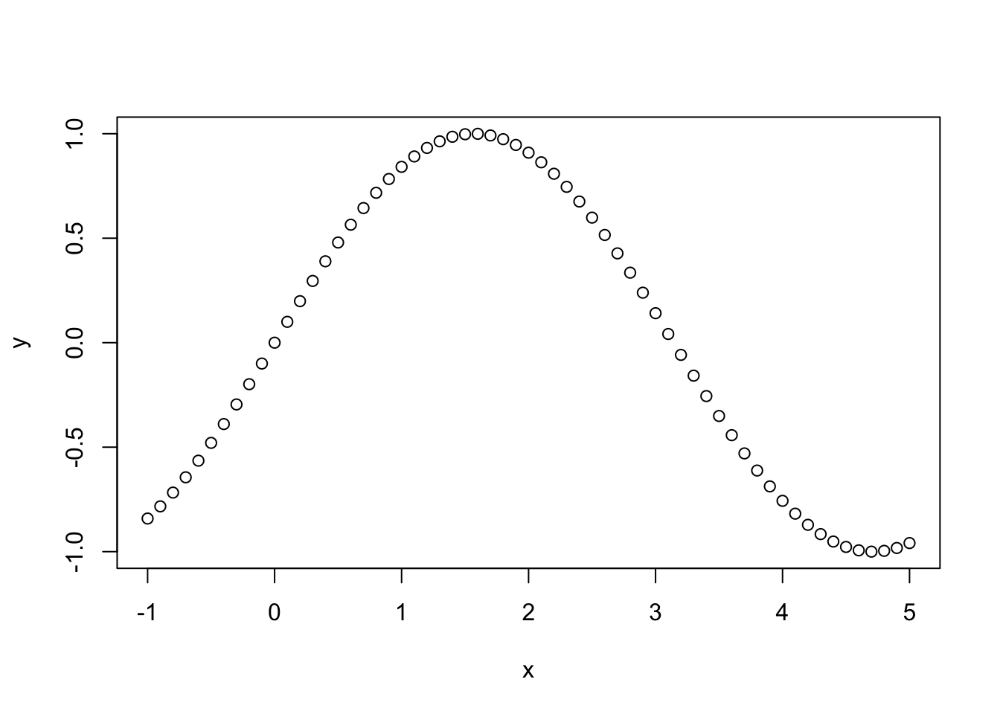
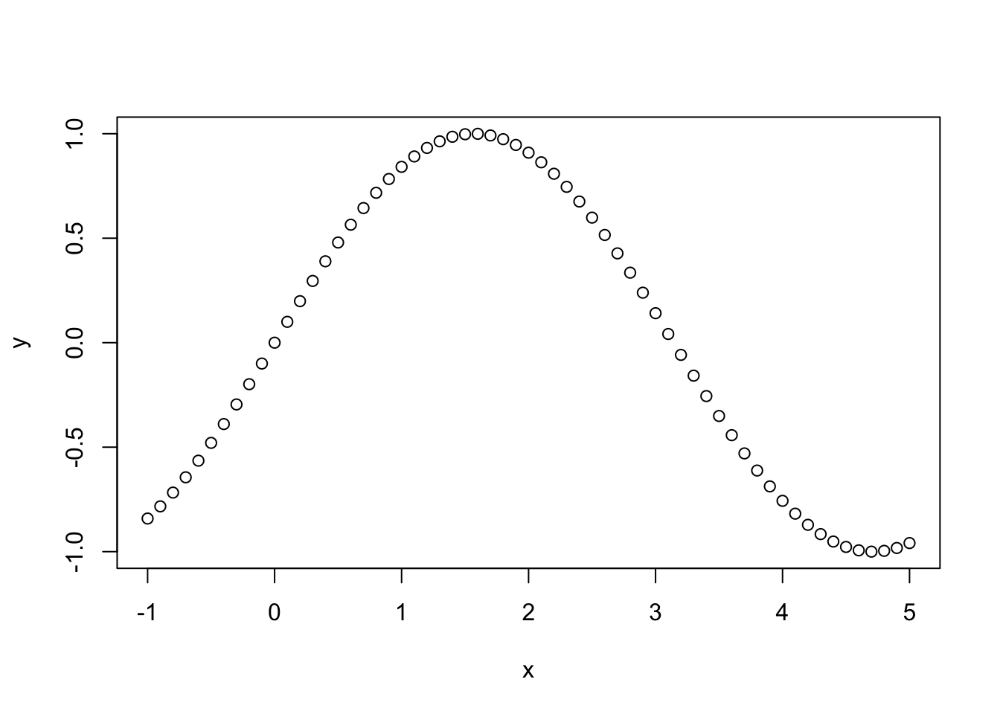
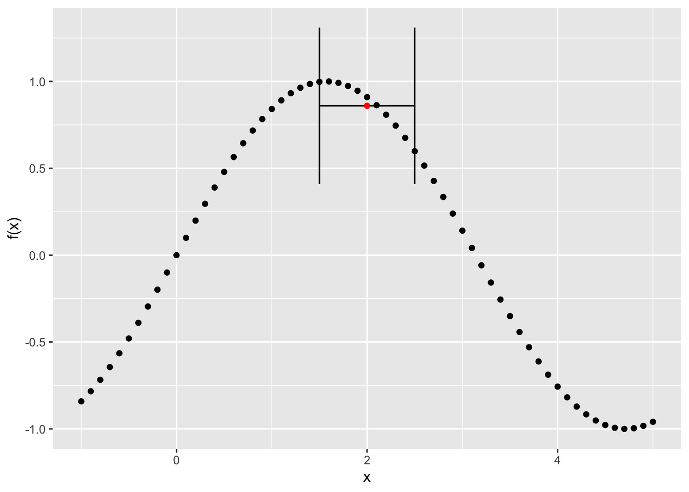
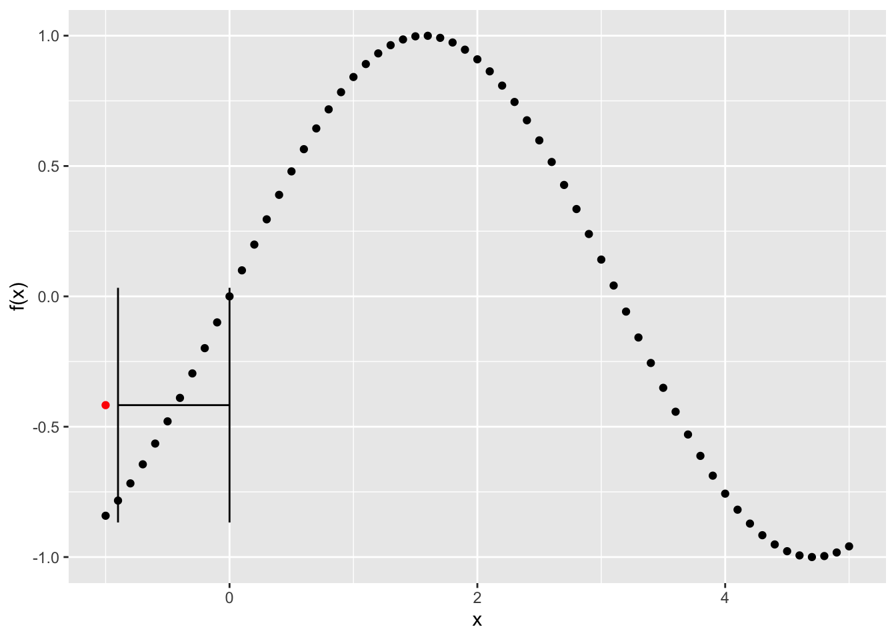
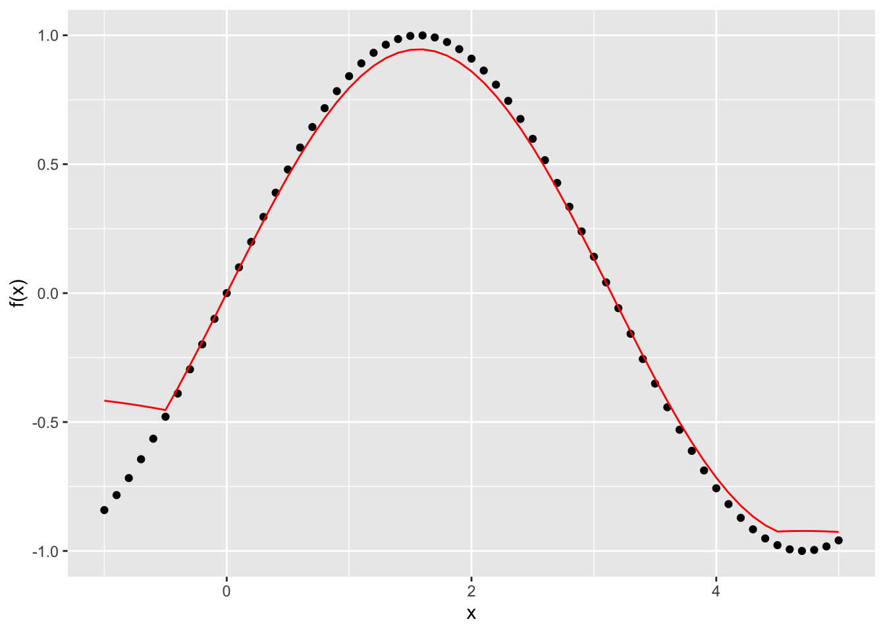
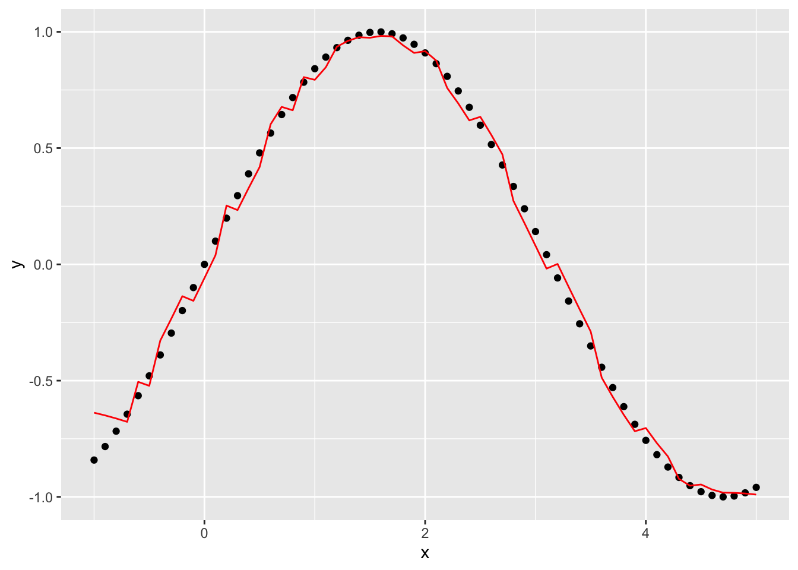
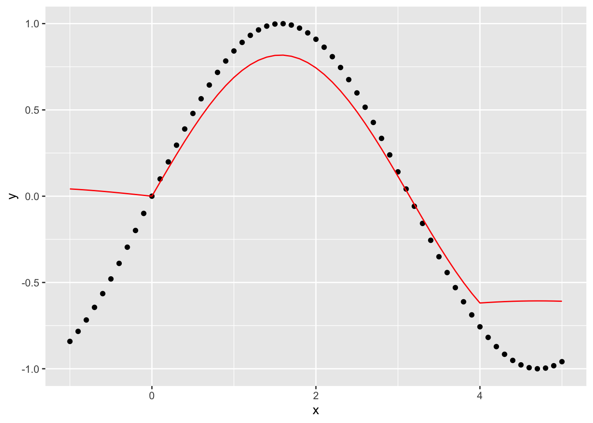
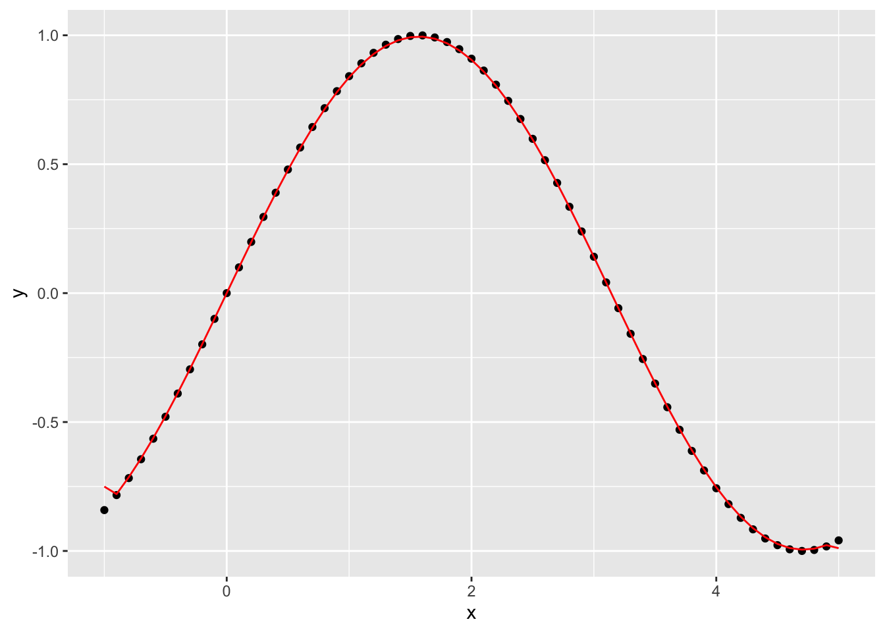

x <- seq(-1, 5, by = 0.1)
y <- sin(x)
plot(x,y)
In this brief tutorial, we will review some basic ideas about smoothing and start thinking through how we can express these ideas mathematically and in R.
Tobler’s profound - but deceptively simple - first law states that:
“Everything is related to everything else. But near things are more related than distant things.” (Tobler 1970)
He applied this idea to his development of a dynamic model of urban growth in the Detroit region which assumed that rates of population growth were spatially similar:
In this post, we’re going to start with a simpler problem - change in the value of a function in one dimension - to see how we can translate the concept of distance decay implied by Tobler’s first law (TFL) into a useful model. To begin, we’re going to keep it simple with no noise or observation error and just interpolate some values.
In this example, we are interested in visualizing and predicting the values of a function \(f(x_i)\) which outputs values \(y_i\), the expected value of the output function.
\[ y_i = f(x_i) \]
Lets start by getting the values of \(f(x)\) for every input value \(x\). For simplicity, we will assume that \(f(x)\) is a sine function and that the values of \(x\) go from -1 to +5, allowing us to observe one half cycle of the sine function:
x <- seq(-1, 5, by = 0.1)
y <- sin(x)
plot(x,y)
You can see right away that this simple curve pretty neatly expresses Tobler’s first law: \(f(x)\) values of each point are in general more similar to each other for nearby values of \(x\). If we want to press this idea into real-world practice, we need a model that can translate TFL into quantitative estimates and qualitative visualizations. There are lots of ways to do this, but we’ll focus in on locally-weighted regression, also known LOWESS.
The basic idea of a LOWESS regression is to define a window of size \(k\) points around each value one wishes to estimate, and calculate a weighted average of the value of those points, which can then be used as the estimated value \(\hat{y_j} \approx f(x_j)\). We then run the values of these nearest neighbors through a weight function \(w(x)\).
These weight functions can take a lot of different forms, but we’ll start simple with a uniform one, i.e. just taking the average of the \(k\) nearest neighbors, so that \(\hat{y} = sum(z(x_i, k))/k\), where \(KNNz\) is a function returning the \(y\) values of the k nearest observations to \(x_i\). The value of \(k\) is sometimes referred to as the bandwidth of the smoothing function: Larger bandwidths use more data to estimate values at each point, smaller ones use less.
Using the fnn package for R, we can find the indices of the \(k\) nearest neighbors of each point we want to make an estimate at:
library(FNN)
k <- 10
z <- knn.index(x, k=k)You can read the output of this function, below, as indicating the indices (\(i\)) of the 10 nearest points to each of the values of \(x\).
[,1] [,2] [,3] [,4] [,5] [,6] [,7] [,8] [,9] [,10]
[1,] 2 3 4 5 6 7 8 9 10 11
[2,] 1 3 4 5 6 7 8 9 10 11
[3,] 2 4 1 5 6 7 8 9 10 11
[4,] 5 3 6 2 1 7 8 9 10 11
[5,] 6 4 7 3 8 2 1 9 10 11
[6,] 5 7 4 8 3 9 2 10 1 11
[7,] 8 6 9 5 10 4 11 3 12 2
[8,] 7 9 10 6 11 5 4 12 3 13
[9,] 10 8 11 7 12 6 5 13 14 4
[10,] 9 11 8 12 7 13 14 6 5 15We can visualize this by picking a point in the middle of the series and its 10 nearest neighbors and the estimated value of \(\hat{y_i}\) obtained by just taking the average of the k nearest points:
library(ggplot2)
## Plot the original data
g <- ggplot() + geom_point(aes(x=x, y = y)) +
xlab("x") + ylab("f(x)")
## Now, get the index for x = 2
x_index <- which(x==2)
## Show the range of k nearest neighbors of this point
knn_low <- min(x[z[x_index, ]])
knn_high <- max(x[z[x_index, ]])
y_hat <- mean(y[z[x_index,]], )
## Add errorbars to the figure to show the 10 nearest values with the height of the point indicating the estimated value at y_i, denoted by the red dot
g <- g + geom_errorbarh(aes(xmin = knn_low, xmax = knn_high, y = y_hat)) + geom_point(aes(x=2,y_hat), colour = "red")
plot(g)
Notice that if the knn function is applied at the low end of the series, i.e. to the first value, it will use points to the right of that one instead of to either side:
library(ggplot2)
## Plot the original data
g <- ggplot() + geom_point(aes(x=x, y = y)) +
xlab("x") + ylab("f(x)")
## Use the index for the lowest value
x_index <- 1
## Show the range of k nearest neighbors of this point
knn_low <- min(x[z[x_index, ]])
knn_high <- max(x[z[x_index, ]])
y_hat <- mean(y[z[x_index,]], )
## Add errorbars to the figure to show the 10 nearest values with the height of the point indicating the estimated value at y_i
g <- g + geom_errorbarh(aes(xmin = knn_low, xmax = knn_high, y = y_hat)) + geom_point(aes(x=x[x_index],y_hat), colour = "red")
plot(g)
Now, lets see what happens if we run our smoother over the whole series and take the average of the 10 nearest points for each and compare them to the observed data:
y_hat <- rep(0, length(x))
for (i in 1:length(x) ) {
y_hat[i] <- mean(y[z[i,]], )
}Now plot the predicted vs. the observed values:
g <- ggplot() + geom_point(aes(x=x, y = y)) +
xlab("x") + ylab("f(x)") + geom_line(aes(x=x, y=y_hat), colour = "red")
plot(g)
You can see this does a pretty good job all the way through, except at the edges. Lets try it again with a smaller window - or bandwidth - of 5 and see what happens. First, we’ll write a function that will give us the predicted value of y at each point given a window of size k and an input value:
knn_est <- function(x, y, k) {
z <- knn.index(x, k=k)
y_hat <- rep(0, length(x))
for (i in 1:length(x) ) {
y_hat[i] <- mean(y[z[i,]], )
}
df <- data.frame(x=x, y = y, yhat = y_hat)
return(df)
}pred_df <- knn_est(x, y, 5)
g <- ggplot(pred_df) + geom_point(aes(x=x, y=y)) + geom_line(aes(x=x,y=yhat),colour="red")
plot(g)
This gets rid of a lot of the weird effects at the edges but introduces some noise into the function. What if we make the window bigger, say 20, to get rid of some of the noise?

This seems to make the edge effects worse, as well as the estimates of the function overall worse.
What happens if we go in the opposite direction and shrink the window down to 2?

Why does this appear to be more accurate for these data than \(k=10\) and \(k=5\)?
What would happen if we added observation noise to the values of \(y_i\)? Which one of the smoothers do you think would work better then?
Is the one best value of \(k\) for all datasets? How might you go about picking the best one?
How does our uniform weight function express Tobler’s first law? What kind of weight function \(w(x)\) might do a better job of capturing the notion of distance decay?
@online{zelner2023,
author = {Jon Zelner},
title = {Codifying {Tobler’s} {First} {Law} Using {Locally} {Weighted}
{Regression}},
date = {2023-01-17},
url = {https://zelnotes.io/posts/smoothing},
langid = {en}
}